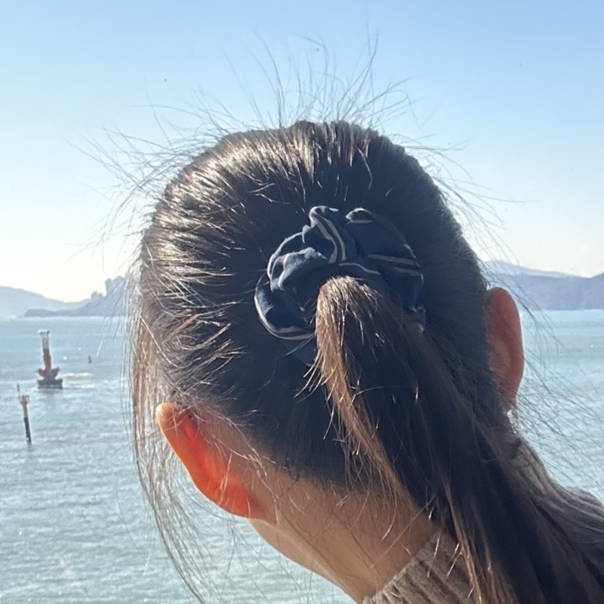

만든 사람들
웹클라이언트컴퓨팅 1분반 1조
고소영
2023xxxx | xxxx전공
CSS | PPT
김창현
20233034 | 소프트웨어전공
Food Page

유지수
20253234 | 소프트웨어전공
Team Page | Form Page | Proposal Page | Form JS
이천홍
2025xxxx | xxxx전공
Game Page | Game JS
최찬영
20220623 | 소프트웨어전공
Index Page | Index JS